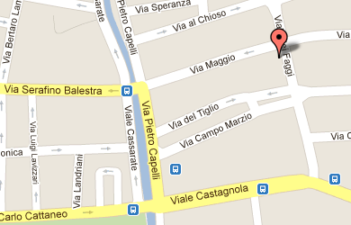

JUG Lugano
Events
We are committed to make our community as active and vibrant as possible. Meetings in person as well as other events will be scheduled on a regular basis. Here you can find a list of events for the JUG Lugano.
Whether you share our passion for software development, or you simply are interested in technology and innovation, join now our community and come to our next event!
Global Day of Coderetreat
Venue
Where
Ex Machina Sagl, vialle dei Faggi 9 - Lugano

When
December 3rd, 2011, from 9:30am to 5:00pm
The Event
Global Day of Coderetreat in Lugano
Not only software craftsmen but every professional developer should
care about life-long learning and continually improving his skills.
Successful software development requires a wide range of skills and
focus from a team, and the technical practices are a core part.
Unfortunately it is often difficult to integrate effective skill
development into our daily workflow. Creating an environment that
allows us to focus on improving those technical skills - one at a time
- is the goal of coderetreats.
Coderetreat is a day-long, intensive practice event, focusing on the
fundamentals of software development and design. By providing
developers the opportunity to take part in focused practice, away from
the pressures of 'getting things done', the coderetreat format has
proven itself to be a highly effective mean of skill improvement.
Practicing the principles of modular and object-oriented design,
developers can improve their ability to write code that minimizes the
cost of change over time.
The Coderetreat day consists of 5-6 facilitated sessions, with an
established, time-tested format that is optimized for focused
practice. During the event a simple task (the Conway's Game Of Life)
is repeatedly tackled over the course of several sessions, each
session concentrating on a specific area of software development and
design. Skills that can be part of the exercise include the 4 rules of
simple design, OO principles (SOLID), TDD as if you mean it,
Functional Programming, Continous Refactoring, Object Calisthenics,
pair programming/communication, ping-pong pairing. Responsibilities of
the Facilitator include introducing the day, guiding pairs through
each session, leading inter-session retrospectives and the closing
circle. Each session's learnings build upon previous sessions.
The ideas presented and practiced in Coderetreat are applicable to any
object-oriented language. To this end, it is suggested that
coderetreats are explicitly multi-lingual. While coderetreat is not a
day to learn a new language, it is perfectly acceptable for someone to
work in a language they are not familiar with. Participants are
expected to bring their own laptop to the event, with an IDE of
choice.
The Coderetreat is a completely free event. Coffee, beverages, and
lunch are provided free of cost to all participants thanks to local
sponsors Canoo and Ex Machina. Global sponsors JetBrains,
ThoughtWorks, Pernix, and Pragmatic Programmers will also contribute
to the event with giveaways for the attendees. To register to the
event please send an email to coderetreat@juglugano.ch
with your name, town and company.
More info can be found here.
Facilitator

Hamlet D'Arcy, Sr. Java/Groovy Developer, Groovy and CodeNarc Committer
Hamlet D'Arcy has been writing software since the 90s, and has spent considerable time coding in Groovy, Java, and C++. He's passionate about learning new languages and different ways to think about problems. Hamlet is the founder of the Basel-based Hackergarten open source coding group, and regularly participates and speaks at local and international user groups and conferences. Hamlet is a committer on the Groovy and CodeNarc projects, and is a contributor on a few other open source projects (including IntelliJ IDEA and the IDEA Groovy Plugin). He blogs regularly at http://hamletdarcy.blogspot.com and can be found on Twitter as HamletDRC.
Local Sponsors
Canoo
Canoo Engineering is the company of choice for Rich Internet Applications (RIA), linguistic morphology and word analysis systems. Thanks to over 12 years' experience constructing business applications and with some of the most experienced Java developers in Europe, it's no wonder Canoo Engineering is the preferred supplier to some of the world's leading organizations.
Ex Machina
Ex Machina is a competence center for Open Source technologies, and one of the largest independent provider of high-quality IT services in Southern Switzerland. Founded in early 2005 in Lugano, Ex Machina provides its Clients with superior IT professional services, living up to the promises of a "Made in Switzerland" service standard. Through its relationships with technical Universities both in Switzerland and abroad, Ex Machina contributes to research in many fields of application of Open Source technology.
Global Sponsors
Poster
Registration Form
Please fill out the form to register to this event
Building Map

Java and all Java based trademarks and logos are trademarks or registered trademarks of Oracle in the United States and other countries. Other trademarks are registered by respective owners.